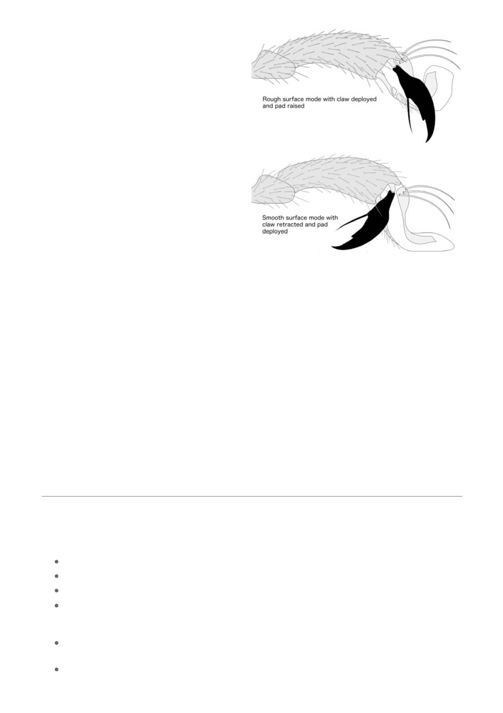

A close-up view of a bee foot showing how the
claws and pad work together to allow the bee to
grip different surfaces. Based on an original
drawing by Adam Tofilski.
A worker bee’s back legs are specialised for
collecting and carrying pollen. As with the front
legs, the back legs are essential and a bee will
not survive the loss of a back leg. Each back leg
has a flat, smooth area fringed with hairs,
known as the ‘pollen basket’. Bees use these
baskets to store and transport pollen gathered
from flowers. Rows of stiff hairs on the inner
side of the leg are known as the ‘pollen comb’
and are used to rake pollen from the bee’s
body into the pollen basket. A structure called
the ‘pollen press’ can be found in the joint
directly under the pollen basket. This
compresses and shapes the pollen load,
keeping it secure. The pollen baskets on
queens and drones have the same large flat
areas on the back leg, but lack the stiff hairs
that form the pollen basket. The pollen baskets
of a worker bee are easily seen with a hand
lens.
Each leg has a foot at the end, often called the
‘tarsis’ which is the scientific name for an insect
foot. The foot is made up of tiny segments that
give flexibility. The foot ends in a pad, used for
gripping smooth surfaces and two retractable claws for gripping rough surfaces.
You should be able to make out the claws with a hand lens, but the pad is less obvious and may be
more difficult to see.
Bee legs are covered in sensory hairs and chemical receptors. Some hairs detect touch or
vibrations, helping bees sense their environment and the activity of other bees. Other receptors on
the legs pick up chemical signals important for hive coordination and recognizing colony members.
Special thanks to Adam Tofilski for the excellent diagrams used in this series. You can see more of
Adam’s amazing drawings of bees at https://honeybee.drawwing.org
About the Author - Bruce Ward is an experienced beekeeper with over 40 years of dedicated
service to the beekeeping industry. Bruce is a member of the Geelong Beekeepers Club Inc.
BioSecurity Key Points
Spring Opening Prepare for new season
clean and repair equipment (smoker/tools/spinner/hive components/protective clothing etc)
swarm minimisation actions
swarm catching/collecting (include quarantine from main apiary, where possible)
varroa education - capacity to manage (how often and when you can manage your hives eg.
can you monitor and inspect weekly or monthly, as needed or weekends only - plan
accordingly) - TOCAL on-line training for varroa basics
first opening - quick look for FEDSS (food, eggs (strong, active queen), disease, swarm cells,
space (for nectar/pollen/honey and brood expansion)
feed, where necessary